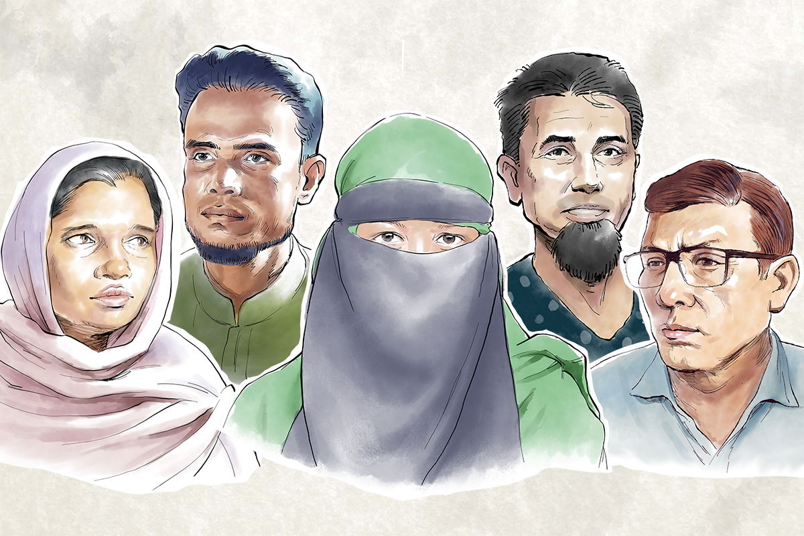
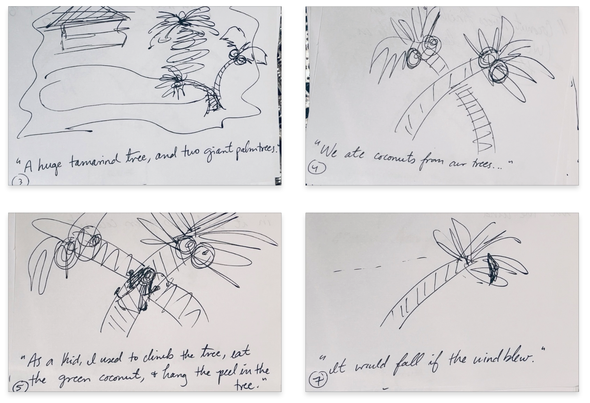
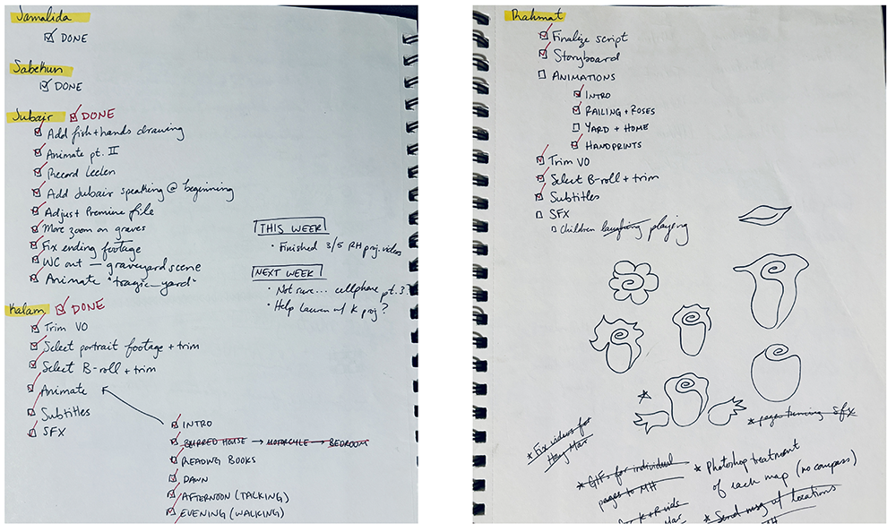
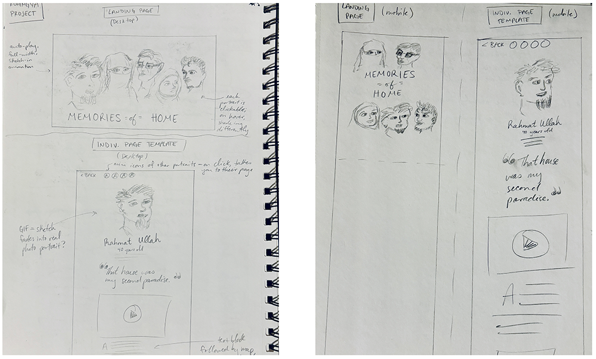

This project aims to humanize the Rohingya refugee crisis by sharing the personal stories of individuals affected by the events leading up to their displacement. Through animation and storytelling, we sought to foster empathy and understanding for the Rohingya people's plight.
From left, illustrations of Jamalida, Kalam, Sabekun, Rahmat, and Jubair, whose stories are featured in this project. (Rebel Pepper / RFA)
Click here to view the published project.
On the fifth anniversary of the Rohingya crisis, our team published a five-part animation series featuring refugees who described the homes from which they fled in 2017. Our goal was to tell a more human-centric side of a story that had been written many times over the years. We accomplished this through beautiful illustrations, emotionally moving animations, and powerful voiceovers.
My workflow for each of these five videos was as follows: Review the script for visually rich descriptions and monitor length; Storyboard illustrations and animations based on the script; Pass on and communicate the story board to the illustrator; Animate scenes in After Effects upon receiving illustrations; Stitch together the final scenes in Premiere; Edit audio and add additional nat sounds such as birds chirping and wind blowing; Export video for review and make adjustments as needed; Edit an additional version with Rohingya subtitles.
In addition to the video production, I sketched out the wireframe for this project then sat down with the web designer so we could work through questions and new ideas together. I also designed and animated the lead image as well as the profile animation and map for each individual’s page.
Our team decided on a soft, peaceful watercolor style for the illustrations to symbolize the dreamy nature of these memories. I complimented this design choice by using a watercolor paper background and watercolor transitions in my animations. Challenges: My main challenge was the learning curve I faced with After Effects in the beginning stages of the project. I had prior experience with AE, but the techniques to create many of the animations I imagined were unknown to me at the time. Still, I persisted by using Google, YouTube and Adobe Community forums to my advantage. By the fifth video, I had exponentially increased my After Effects know-how and animation skills.
Programs used: Adobe Illustrator, Adobe InDesign, Adobe Photoshop, Adobe After Effects, Adobe Premiere
Select storyboard scenes from Memories of Home. (Amanda Weisbrod / RFA)
Select storyboard scenes from Memories of Home. (Amanda Weisbrod / RFA)
A checklist to track my progress during the project as well as a sketch for an animated flower in Rahmat's video. (Amanda Weisbrod / RFA)
A wireframe for the Memories of Home project, outlining the layout and design elements. (Amanda Weisbrod / RFA)
Click here to view the published project.